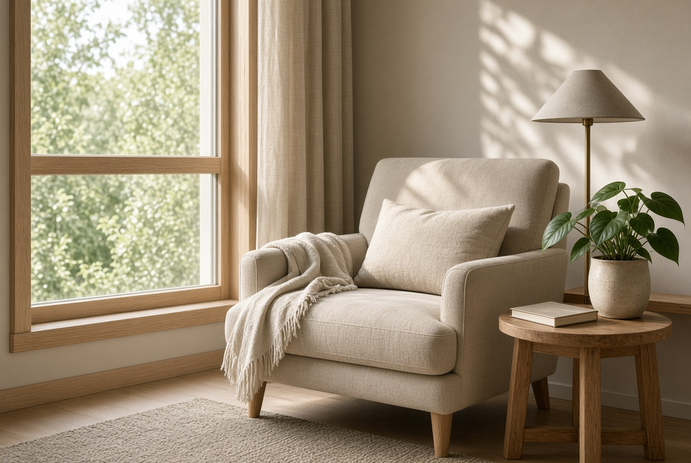
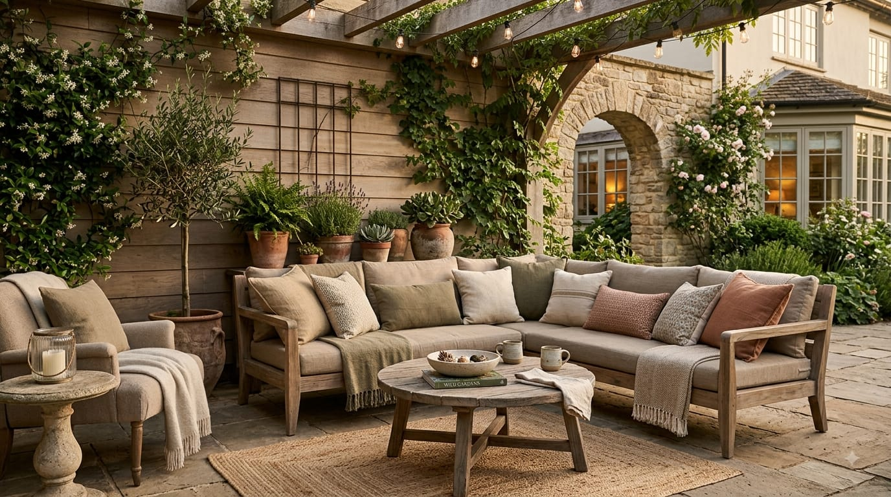

Cómo reducir la humedad en casa
Identifica las causas de humedad, mejora la ventilación y evita soluciones que solo ocultan el problema.
Leer artículo →Soluciones prácticas para limpiar, proteger y mantener diferentes zonas y materiales de la vivienda.

Identifica las causas de humedad, mejora la ventilación y evita soluciones que solo ocultan el problema.
Leer artículo →
Una rutina práctica para limpiar superficies, mobiliario y elementos expuestos al clima.
Leer artículo →
Consejos para limpiar y conservar piedra natural utilizando métodos adecuados para cada acabado.
Leer artículo →